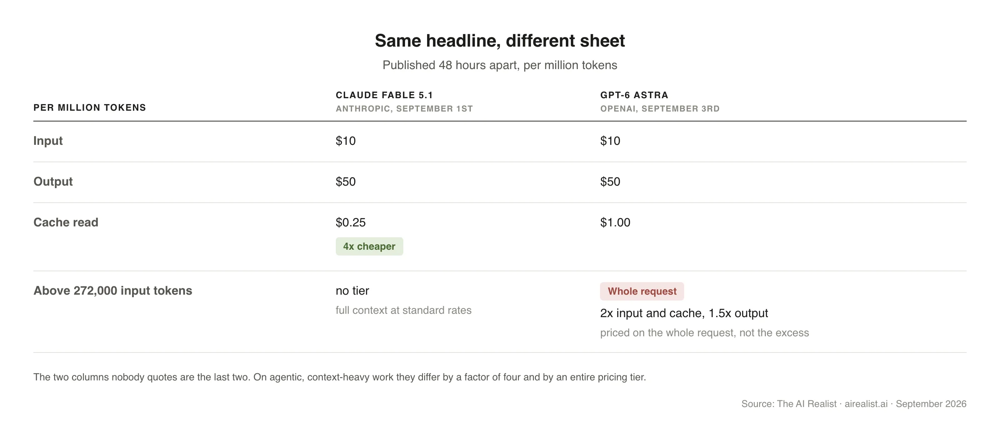
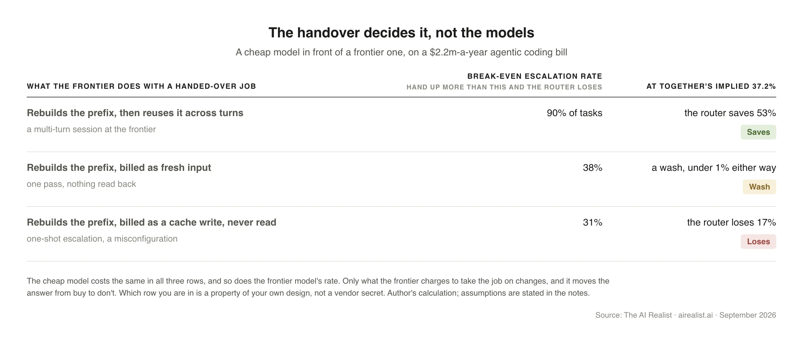

On September 1st, Anthropic published a rate for Claude Fable 5.1: $10 per million input tokens and $50 per million output tokens.[1] On September 3rd, OpenAI published a rate for GPT-6 Astra: $10 per million input tokens and $50 per million output tokens.[2] Two frontier laboratories, forty-eight hours apart, at the same two numbers.
Read the sheets past the headline, and they are not the same price.[3][4] For the agentic, context-heavy work both companies are selling into, the columns nobody quotes differ by a factor of four and by an entire pricing tier.

Prices per token keep falling. Bills keep rising. The fix everyone reaches for is routing:send each job to a cheap model first, and pass it to a frontier model only when the cheap one fails. Done right, that pays for two reasons. The cheap model does most of the work, so the frontier bills only for the share that fails. And the context the frontier has to rebuild when it takes over is paid for once and then read at a fraction of the price for the rest of the session, which is what a prompt cache is for. Done wrong, the same router costs more than the frontier alone.
This piece is about that pass, the moment a job one model has been working on is handed to another, because that is where right and wrong part company. Some jobs can be handed over for almost nothing. Others cost more to hand over than the savings from the cheaper model. TheGood-Enough Lineruns between those two kinds of jobs. It does not run between frontier models and cheap ones.
What makes a handover expensive is everything that has piled up behind the job: the instructions, the documents, the results of every tool it has called, every turn of the conversation so far. The model that has been working on it has read all of that. The model taking over has not. Handing over means sending it all again, in full, and paying for it. Both vendors publish every rate you need to price that. What neither documents is how a rebuilt prefix is billed when a job arrives from another model, and no benchmark measures how often you would hand one over. That is why no vendor can quote your line.
Where the line falls depends on what you have built around the models: the rule that decides which model sees a job, the check that decides whether the cheap one got it right, and the pile of instructions you have written to make either one work. Practitioners call that pile the harness and the runbook. Four things set the line: what the handover costs; how often the cheap model’s work fails a check; what running that check costs; and what it costs to keep the harness current across a model release every few weeks. The first is what this piece is about.
A word on the column that does the damage, because it is the least understood line on either sheet. These models remember nothing between calls. Every turn of a conversation resends the whole of it: the system prompt, the documents, the tool output, every previous exchange. By the twentieth turn, you are paying to send the first nineteen again, at full input price, for the twentieth time.
Prompt caching stops that. The provider keeps the prefix it has already processed, so you pay full price only for what is new in this turn and a fraction of it for everything before. Take a fixed two-hundred-thousand-token context over twenty turns. Uncached, it costs forty dollars. Cached on Anthropic’s sheet, it costs about three and a half; the prefix is written once at $12.50 per million, and read nineteen times at 25 cents per million. On OpenAI, the same twenty turns cost just over six, because its cache read is four times Anthropic’s.[5] Same headline rate, nearly double the bill, on one conversation.
One thing stops it from being free money. Writing to the cache costs more than sending fresh, a quarter more on both sheets and twice as much for Anthropic’s hour-long window.
Past that, the savings compound, and four things make it compound the hardest:
Long sessions, because every turn reads back everything before it.
Large fixed context, because the system prompt, the codebase, and the documents are written once and read all day.
Tool results, because each is appended to the prefix and re-read on every subsequent turn, so an agent that calls twenty tools has bought itself twenty more things to read cheaply.
Retries, which resend a context the provider has already processed, are therefore nearly free.
That last one is worth holding on to. A retry within a single model costs almost nothing. The same retry sent to a different model is a full rebuild because the cache is stored per model; a task handed to another vendor or to another model on the same sheet leaves it behind.[6] The more of your bill the cache saves today, the more you lose the moment the job switches to a different model.
Run the numbers on your own bill
Take a team spending a little over two million dollars a year on agentic coding: about thirty-five billion input tokens a month against 1.8 billion output tokens, four-fifths of the input served from cache and the rest written to it. Neither vendor publishes a cache share, so I assume four-fifths, and every figure below is based on that assumption. On Anthropic’s sheet, that is about $183,000 a month.[7] Move the identical workload to OpenAI at the same headline rates; it is about $204,000. The whole of the difference is one column: seventy-five cents per million tokens of cache read, across twenty-eight billion cached tokens a month, amounts to $21,000 per month and about $254,000 per year.[7] Read your own off your own bill; the rate is the thing, not the total.
One assumption is worth more than the finding. The comparison counts a token at one vendor as a token at the other, and the two bills differ by only 11.6%. Anthropic’s own pricing page records a 30% token-count difference between its own tokenizer generations,[3] so a cross-vendor gap of that order in Anthropic’s direction would reverse the ranking. What does not move with the tokenizer is the ratio between the two cache-read columns, which is the number this piece is about.
Now put a router in front of it. Send everything to DeepSeek’s V4-Pro first at its peak rates, and the same number of tokens costs about $17,500 a month,under a tenth of the frontier bill.[7] It is priced here because it is the cheapest published frontier-class rate, not because it is the one your procurement will clear. A tenth of the price looks like the end of the argument. If handing the hard cases up were free, you could hand up almost everything and still come out ahead.
Substitute a cheap tier that your procurement will actually clear, and the whole calculation moves, because the cheap pass is the numerator of every break-even below. The nearest rung is on Anthropic’s own sheet: Opus 5 at five and twenty-five, half of Fable, with cache hits at fifty cents.[3] Go one further down, to Sonnet 5, and the same tokens cost about $41,000 instead of $17,500.
Handing them up is not free, and the cost turns on one thing no rate card answers: whether the frontier model keeps the prefix it has just rebuilt, or pays to rebuild it and then throws it away. When the escalated task arrives at the frontier, its prefix must be rebuilt, and the bill depends on whether that prefix is read back.[7]
How often you hand up decides the rest, and the only public number for that comes from Together AI, an inference and routing vendor that ran a cheap model first and escalated to a frontier one whenever the tests failed. Its published costs imply it handed up 37.2% of tasks.[8] That was a coding benchmark with a free machine check, on nothing like a cache-heavy workload, and Together claims nothing about this bill. The rollouts and the costs are its run. The escalation rate, the bill, the assumptions, and the conclusion are mine.
The break-even escalation rate is the share of jobs you can send to the frontier before the router’s bill equals the cost of sending all jobs to the frontier. Below it, routing saves money. Above it, you would have done better paying the frontier rate for everything. There are three rows because the frontier can bill a handed-over job three ways.

Seventy points of spread, and nothing about the models moved to produce it. The cheap model costs the same in all three rows, and so does the frontier model’s rate. What changes is only what the frontier charges to take on the job. That alone moves the answer from buy to don’t, which is the argument:how the frontier bills a handed-over job decides whether routing saves money, and it decides it harder than the choice of models does.
Which row you are in is not a vendor secret. It is a property of your own design, and you can read it off your own traffic. Escalate into a session that runs for several turns at the frontier, and the rebuilt prefix is written once and read many times, which is the top row. Escalate one-shot, and it is written and thrown away, which is the bottom row, and Anthropic’s own pricing page says caching pays for itself after a single read. So the bottom row is a misconfiguration rather than a third possibility, and a competently built cascade lives between a fifty-three per cent saving and a wash.
The cache share moves the middle reading too: at four-fifths, the middle reading is a wash; at seven-tenths, the router wins; and above nine-tenths, the middle reading breaks even at 29 percent, so a router escalating more than that loses.[7] Before copying any of this, get your own cache share and your own escalation rate.
So the line falls where the opening said it would, and the ranking of the three rows holds whichever pair of models you put on either side of it. Anthropic’s own cache diagnostics say the cache is per model and tell you to hold the model constant within a cached conversation, so escalating from a cheap tier to an expensive one on the same sheet drops the prefix exactly as crossing a vendor boundary does.[6] The charge is on the handover, not on the border.The way out is to hand nothing over: pick the model for each job before the work starts, based on the job type, rather than switching models mid-task after a failure.That is selection instead of routing, and it is not free either. A partition is only as good as the rule that assigns the job. Escalation puts the cost on the invoice; partition puts it somewhere you have to go and look.
The convergence ran one way
The convergence was not mutual. Anthropic has charged ten and fifty since Fable 5 and changed exactly one cell when 5.1 shipped, cutting the cache read from a dollar to twenty-five cents.[9] OpenAI climbed. GPT-5.6 Sol launched on July 9th at five and thirty. On August 21st, OpenAI cut it to four and twenty, and called the new rate promotional, running at least to November 21st.[10]
The multiple depends on which Sol you measure. Compared to the promotional rate, Astra is 2.5 times; compared to Sol’s July launch price, it is 2 times the input rate.[10] One lab set a number and held it. The other cut the price of its existing model and launched a new one at double the old launch price, which is how it arrived at the same two figures. Every rate card quoted here was captured between August 11th and September 7th, so this is a three-week window rather than a price history.
The referee moved too. On September 3rd, Artificial Analysis scored Astra level with Sol, both at sixty-one. On September 4th, it shipped a new version of its index, doubled the weight of its private held-out set to forty per cent, and under that version, Astra came out four points ahead of Sol.[11] Three days later, it shipped another, raised the private weighting to forty-five per cent, and under that, Fable 5.1 and Astra tie at fifty-three, with Sol six points behind.[11] Two revisions in four days, each naming its changes, and the order at the top moved with each. It publishes the weight of every evaluation and of each category. What it does not publish is the contents of the private held-out sets, which is the half an outsider would need to separate the model from the ruler. It publishes a cost per index task, and Astra is the cheaper model at $3.26 compared to $7.63 for Fable 5.1.[11] At identical headline rates, that gap is in token volume, not price, and the tokenizer bound above runs in exactly that direction.
The premium buys a runbook you did not write
Buyers are now running this arithmetic on whether to keep renting a frontier model.
Together AI put GPT-5.6 Sol against DeepSeek V4-Pro over 904 rollouts on DeepSWE, a software engineering benchmark. Sol won on a single attempt, 72.7 percent against 62.8. At four attempts, the ranking inverts, and the open model takes it, 88.5 percent against 85.8.[8]
Then Together did what an engineer would do: ran the cheap model first and escalated to Sol only when the tests failed. That cascade solved 83.0 percent at $3.35 per task. It beat Sol alone on accuracy and on price. It also beat a hypothetical perfect router that chooses one model per task in advance, even though the cascade is allowed a second attempt and that router is not.[8] Together sells inference and routing, so read the recommendation with that in mind; the rollouts are still the best public head-to-head with cost attached.
Note what the cascade is made of. Its 83.0 percent includes every escalated call to Sol, at Sol’s price.A routing policy does not take the frontier off the bill. It decides how much of the bill the frontier gets.
On Terminal-Bench 2.1, the StateM work reported 88.09 percent with a DeepSeek V4-Flash configuration, compared with a GPT-5.6 Sol reference that scored 88.8. That is a match rather than a win, which is the point: the scoring run cost $15.20, or $52.22 once the provider-specific adaptation and the required configuration are included, against $574.68 of the submission-reported cost for the reference.[12] The two cost figures are not measured the same way; one is a bill, and the other is the submission’s own estimate, so read the gap as an order of magnitude rather than a ratio.
One condition carries both results. The cascade escalates when the tests fail, and both runs sit on benchmarks that hand you a free, machine-checkable verifier.Most work has no such check. Nothing tells you that a summary, a customer reply, or a research memo came back wrong. The escalation rule has nothing to fire on, and the buyer pays the frontier rate as insurance against mistakes they cannot see.
There is also a cheaper answer that needs none of it. Batch is half off both columns on both sheets; it stacks with caching and requires no router, verifier, or runbook. For anything that can wait, that is the first thing to do, and this piece is not about it.
The buyers said it first, including one who holds shares in the seller
In May, Marc Benioff described the mechanism on the All-In podcast. He would probably use about $300 million of Anthropic's funds that year on Salesforce coding, he said. That is a personal forecast, not a disclosed commitment. Later in the same conversation, he said the vast majority of those tokens do not need to go to Anthropic, that there needs to be an intermediary layer, and that smaller models can route each job to the most affordable option.[13] He said it as the chief executive of a shareholder in the supplier [14].
He is not quite arguing against his own book. Salesforce’s stake is worth what Anthropic’s market is worth, not what Salesforce’s token bill is worth, and the intermediary layer Benioff wants is something Salesforce sells. The chief executive of one of the largest enterprise software companies called the routing policy the obvious engineering answer, at a moment when nothing obliged him to say anything at all.
On August 27th, Salesforce’s executive vice president of finance, Mike Spencer, reportedly said that covering token spend was “part of the reason we didn’t raise margin guidance on the year”, and that on many jobs “you’re totally fine with the second or third generation model”.[15][16]
The second buyer sells the infrastructure rather than the model, so its interest runs in the opposite direction. On September 2nd, the chief financial officer of Hewlett Packard Enterprise said on an earnings call that the company routes each internal workload request to the most cost-effective model across open-source and open-weight options on its own private cloud. On HPE’s own internal analysis, she said, its private-cloud offering can reduce token costs compared with the public cloud by up to 60%.[17] HPE sells that private cloud, so the 60% is its own product figure, as reported on its earnings call. Read it the way the Together figure is read here: interested, and still the most specific public claim of its kind.
What would have to break
The strongest argument against all of this is that nobody is doing it yet. Vercel runs a gateway that sends traffic to many laboratories and bills every token at list price. In July, Anthropic handled 30% of the tokens that passed through it and collected 65% of the revenue.[19] Its tokens sold for 4.4 times the average price of everyone else’s, and that premium was 3.4 times in June. Buyers are paying the premium, and paying more of it each month. Cheap models are winning volume. They are not yet winning budgets.
That premium is also the test. Watch it rather than Anthropic’s share of spend, because the share falls whether Anthropic cuts its prices or buyers route work away, and those mean opposite things. If the 4.4 falls toward 1 over the next two monthly reports, Anthropic is closing the gap itself, and a buyer has nothing to route away from.
The second comes from the supply side. A modelling paper argues that when capacity binds, a degraded cheaper tier needs more attempts per satisfied answer, so the discount can invert: the buyer pays less per call and more per outcome.[20] That is one more cost that lands on the outcome and never on the rate card, and it reaches the bottom row of the table by a second road. If an independent run at a matched retry budget erases the cascade’s advantage, the premium was buying capability after all.
Until one of those happens, the sheet says one thing and the bill says another. The charge is on the handover, not on the border.The numbers that decide what you should do are: how much of your traffic the cache serves, and how often the cheap model has to hand up. The first is already in the usage object of every call you have paid for. The second costs a pilot. That is the real price of the answer.
Notes
[1] Anthropic, “Claude Fable 5.1 and Claude Mythos 5.1“, published September 2026, accessed September 7th, 2026, whose own metadata dates it only to the month; the day comes from Anthropic’srelease notes, accessed September 7th, 2026, under the heading “September 1, 2026”: “at $10 / $50 USD per MTok, the same as Claude Fable 5, with cache reads cut to $0.25 per MTok”. The announcement itself says: “Fable 5.1’s pricing is otherwise the same as Fable 5’s: $10 per million input tokens and $50 per million output tokens.” The same page sells the cache cut as the saving: “For typical workloads, costs are reduced by around 25% relative to Fable 5. For complex coding and highly agentic tasks, the savings could be up to around 45%.” Rates confirmed independently on Google Cloud’sVertex AI partner-model price sheet, which lists Claude Fable 5.1 input $10.00 and output $50.00.
[2] OpenAI,API pricing, accessed September 7th, 2026: gpt-6-astra at $10.00 input, $1.00 cached input, $12.50 cache writes, $50.00 output for standard short-context requests. The same rates appear in Microsoft’sFoundry announcementof September 3rd, 2026. OpenAI’s marketing pages refuse automated requests; the developer documentation, to which platform.openai.com/docs/pricing redirects, does not.
[3] Anthropicpricing documentation, accessed September 7th, 2026: Claude Fable 5.1 at $10 base input, $12.50 five-minute cache writes, $20 one-hour cache writes, $0.25 cache hits and refreshes, $50 output; “Cache hits and refreshes on Claude Fable 5.1 and Claude Mythos 5.1 are priced at 0.025x the base input price. All other models use the standard 0.1x multiplier.” On break-even: “caching pays off after one cache read for the 5-minute duration (1.25x write), or after two cache reads for the 1-hour duration (2x write).” On the tokenizer: “Claude 4.7 and later models and Claude Mythos Preview use a newer tokenizer … This tokenizer produces approximately 30% more tokens for the same text.” On context: “For Claude 4.6 and later models … include the full 1M token context window at standard pricing.” Google Cloud’sVertex AI sheetcarries the same cache rates from a counterparty rather than from Anthropic.
[4] OpenAI’smodel page for GPT-6 Astra, accessed September 7th, 2026: “Prompts with more than 272K input tokens are priced at 2x input and cache rates and 1.5x output for the full request.”Microsoft Learnstates the same threshold and the same full-request rule: “For GPT-6 models, prompts with more than 272,000 input tokens use long-context pricing for the full request, not only for tokens beyond the threshold.” Two vendors, one figure.
[5] Author’s calculation from the rates in notes 1 to 3, for a fixed 200,000-token prefix over twenty turns. Uncached, twenty turns resend four million tokens at $10 per million; author’s calculation: 4 × 10 = 40. Cached on Claude Fable 5.1, the prefix is written once at $12.50 per million, $2.50, and read nineteen times at $0.25 per million, $0.95, so $3.45 in total. On GPT-6 Astra the write is the same $2.50 and the nineteen reads cost $3.80 at $1.00 per million, so $6.30. The two cached bills differ by $2.85 on one conversation, at identical headline rates.
[6] Anthropic,cache diagnostics, accessed September 7th, 2026: “The cache is per-model. Hold the model constant within a cached conversation.” Checked against theprompt-caching page, accessed September 7th, 2026, whose table of what invalidates a cache carries no row for the model, and against thepricing page, which does not record it either: the rule is documented in one place. OpenAI’scaching guide, accessed September 7th, 2026, states only the weaker version, that “a different model can use different weights and caching behavior”, so do not read its position as absolute. One cut runs the other way and is recorded here for fairness: OpenAI’schangelog entryfor GPT-6 Astra of September 3rd, accessed September 7th, 2026, lets a caller change reasoning effort mid-conversation while preserving the cached prefix, where Anthropic’s invalidation table lists the effort setting as cache-invalidating. On that axis, which this piece does not price, OpenAI’s cache is the more forgiving of the two.
[7] Assumptions are mine and stated: about 35.3 billion input tokens a month, four fifths served from cache and the rest written to it, and 1.76 billion of output. Rates from Anthropic’spricing pageand OpenAI’smodel page, both accessed September 7th, 2026, and from the DeepSeek schedule below. Counting writes at $12.50 per million, Anthropic’s month is $88,250 of writes, $7,060 of cache reads and $88,000 of output, about $183,300, or $2.2m a year; OpenAI’s differs only in the cache column, at $28,240, about $204,500. The gap is the $0.75 per million between the two cache rates across 28,240 million cached tokens; author’s calculation: 28240 × 0.75 = 21180. That is about $254,000 a year, and because the write rate is identical on both sheets, counting writes raises both bills without moving the gap. The same tokens on DeepSeek V4-Pro at peak cost about $17,500, at $0.044 per million on cache hits, $1.32 on cache misses and $3.96 on output, all three transcribed from the image table in DeepSeek’spricing announcementof August 13th, 2026, which publishes the schedule as pictures rather than as page text. Break-even escalation is (183,310 − 17,531) ÷ the cost of escalating everything, which is $183,310 if the escalated task rebuilds and reuses its own cache, $441,000 if every token goes fresh at $10, and $529,250 if the rebuilt prefix bills as a cache write at $12.50: author’s calculation: 165779 ÷ 183310 = 90.4%. The other two denominators give 37.6 and 31.3 per cent. The model applies no long-context multiplier on either sheet, which is conservative in OpenAI’s favour: above 272,000 tokens its input and cache rates double, so including it widens the gap rather than narrowing it. One further assumption runs the other way. The break-even is a share of tokens and Together’s rate is a share of tasks, and a cascade that escalates on test failure escalates the long, context-heavy ones by construction, so their token share exceeds their task share and every break-even above is a little generous to the router. Anthropic says of one workload it built that cache reads were most of the cost, but that is a cost share on Fable 5 pricing before the cache cut, and it is not this workload: here cache reads are about four per cent of the bill. Chart data indata/routing-break-even.csv.
[8][]Together AI, August 18th, 2026: 904 rollouts across 113 tasks, four trials per model; Sol at 72.7 per cent pass@1 (±2.2) and $8.37 per rollout against V4-Pro at 62.8 per cent (±3.1) and $0.24; at four attempts the order reverses, V4-Pro at 88.5 per cent pass@4 against Sol’s 85.8, and Together’s own line on cost is “The price gap is 35x”; a Pro-first cascade escalating on test failure at 83.0 per cent and $3.35 per task, above a perfect one-shot oracle router at 80.8 per cent. The escalation rate used in this piece is derived, not published; author’s calculation: (3.35 − 0.24) ÷ 8.37 = 37.2%. It also falls out of the single-attempt pass rate, since 100 − 62.8 = 37.2, which reproduces it without relying on the $0.24 this note goes on to impeach. Together ran a second cascade three days later, “GLM-5.3 vs GPT-5.6 Sol on DeepSWE“, August 21st, 2026, over the same 113 tasks and 904 rollouts: GLM-5.3 at 69.0 per cent (±2.7) and $3.99 a rollout, Sol at 72.7 (±2.2) and $8.37, and “Run GLM-5.3 first and escalate to Sol only when your test suite rejects the answer: 85.9% solved at $6.61 per task.” Both routes reproduce there too; author’s calculation: (6.61 − 3.99) ÷ 8.37 = 31.3%. The pass-rate route gives author’s calculation: 100 − 69.0 = 31.0%. So the public range for a test-failure cascade is roughly 31 to 37 per cent across two model pairs. The 31.3 here is an escalation rate and is not the 31 per cent break-even in the table above, which is a different quantity that happens to land on the same figure. Vendor-run: Together sells both the inference and the routing, and its own caveat is that every figure comes from this run and can differ from other public scorecards. It does not state which rate card it costed against, and the post of August 18th predates OpenAI’s cut of August 21st, so the Sol side is most likely at the pre-promotional $5 and $30 while the Astra comparisons elsewhere in this piece are at $4 and $20. The open-model side is the harder problem. Together’s own price list bills DeepSeek V4-Pro output at $3.96 per million and DeepSeek’s card matches it, so the 101,000 output tokens the post reports per rollout cost about $0.40 before a single input token is counted, against a reported total of $0.24; off-peak at $1.98 still gives $0.20 and leaves four cents for 146 agent steps of input. Together’s post offers no explanation. The direction matters: correcting it narrows the price gap and raises the cascade’s cost without reversing either. DeepSWE is also the suite on which V4-Pro moved from 12.8 at preview to 62.7 at general availability, a jump consistent with fitting to the published harness. The independent leg of the same proposition is theStateM work; see note 12.
[9] Anthropic’s own documentation lists the superseded rate: Claude Fable 5 at $10 input, $50 output, $1 cache hits, on itspricing documentation. Themarketing pagecarries the same figures under legacy models. The ratio between OpenAI’s cache read for Astra and Anthropic’s for Fable 5.1, author’s calculation from note 2 and note 3: $1.00 ÷ $0.25 = 4x.
[10] OpenAIAPI changelog, entry of August 21st, 2026: “GPT-5.6 Sol now costs $4 per million input tokens and $20 per million output tokens, representing 20% lower input pricing and 33% lower output pricing. GPT-5.6 Sol’s promotional pricing is available at least through November 21st, 2026.” Thepre-cut sheet, archived August 11th, 2026, lists gpt-5.6-sol at $5.00 input and $30.00 output. Microsoft’sAzure OpenAI price pagestill lists Sol at $5.00 and $30.00, accessed September 7th, 2026.
[11] Artificial Analysis, “Intelligence Index v4.2“, September 4th, 2026: GPQA Diamond removed as “saturated” with no ceiling published, AA-Briefcase and GDP.pdf added, private held-out weighting doubled to 40 per cent, and Astra placed four points above Sol. The previous day’s benchmarking piece scored both at 61 under version 4.1.1.Version 4.3, September 7th, 2026, accessed September 8th, 2026: “Both Claude Fable 5.1 (max with fallback) and GPT-6 Astra (max) score 53 on Intelligence Index v4.3, followed by Claude Opus 5 (max, 51), Claude Fable 5 (with fallback, 50), Muse Spark 1.3 (max, 48) and GPT-5.6 Sol (max, 47)”; “Evaluations with private questions or answers account for 45% of the Intelligence Index v4.3 weighting, up from 40% in v4.2”; and on cost: “GPT-6 Astra (max) and Claude Fable 5.1 (max with fallback) both score 53, but their average cost per Intelligence Index task is $3.26 and $7.63 respectively - 57% lower for Astra.” Terminal-Bench moved from 2.1 to 4.0 and AutomationBench-AA replaced τ³-Banking at the same 5 per cent weight; category weights are unchanged.
[12][]StateM, August 15th, 2026, on Terminal-Bench 2.1: 88.09 per cent from a DeepSeek V4-Flash configuration against a GPT-5.6 Sol max reference of 88.8; $15.20 of realised API charges on the scoring run, $52.22 including about $37 of provider-specific adaptation, against $574.68 of submission-reported model cost for the reference, which the paper puts at roughly a ratio of one to eleven. A frozen runbook is worth 9.0 to 10.4 points, the upper figure computed off a headline 95.3 per cent that the paper flags as pre-adjudication with a defensible range of 93.26 to 95.28. Four authors, no declared affiliation, described as personal-time work. Applied unchanged across providers the runbook lowered the score, 82.7 to 82.0, and the adaptation recovered the gain; the authors also disclose that on one task family the profile learned the evaluator’s boundary convention without reading verifier code, so part of the harness gain is fit to the grader. The independent leg of the same proposition isTogether’s run, a different benchmark, a different method and an opposed interest.
[13] Marc Benioff,All-In podcast, uploaded May 15th, 2026, at 38:56 and 1:00:29, from the published captions: “I am going to probably use $300 million of Anthropic this year at Salesforce coding” and “the vast majority of those tokens don’t need to go to Anthropic, there needs to be some intermediary layer … these ones can handle by smaller models that can route it to the most affordable for the job.” A personal forecast scoped to coding, not a disclosed commitment: Salesforce’s 10-Q for the quarter ended July 31st, 2026 records no Anthropic purchase obligation and no significant change to fixed contractual obligations.
[14] SalesforceForm 10-Qfor the quarter ended July 31st, 2026, EDGAR acceptance August 26th, 2026 22:54:46 UTC: a strategic investment portfolio of over 450 companies carrying $11.3 billion, “including the Company’s investment in Anthropic PBC … which represented approximately $5.1 billion”, about 45 per cent of the portfolio against 22 per cent at January 31st, and “Upward adjustments for the three and six months ended July 31st, 2026 include unrealized gains of $2.7 billion and $3.0 billion, respectively, related to the Company’s investment in Anthropic” — the body uses the six-month figure, because the period it describes runs from January to July. The portfolio was $7,591m at January 31st and $11,324m at July 31st; author’s calculation: 7591 × 0.22 = 1670. The quarter’searnings exhibitgives “Gains (losses) on strategic investments, net” of $2,613m against “Income from operations” of $2,331m, and states that strategic-investment gains “impacted GAAP diluted net income per share by $2.43”, which is where the below-the-line placement is proved.
[15][]The Register, September 3rd, 2026, reporting Mike Spencer at the Deutsche Bank Technology Conference of August 27th: “It’s part of the reason we didn’t raise margin guidance on the year because we’re covering some of the token spend that we’ve got going”, and “You’re totally fine with the second or third generation model.” Salesforce’s investor-relations page confirms the event, the date of August 27th and the speaker, and gives his title as executive vice-president of finance where the outlet gives deputy chief financial officer. The webcast sits behind a registration gate and the company has published no transcript, so this is one outlet’s note of a session and the piece attributes it as reported rather than stating it.
[16] SalesforceForm 8-K exhibit 99.1for the second quarter of fiscal 2027, EDGAR acceptance August 26th, 2026 20:03:53 UTC: “GAAP operating margin of 20.5% and non-GAAP operating margin of 34.1%” and “Updates full year FY27 GAAP operating margin guidance to 20.1%, and maintains non-GAAP operating margin guidance of 34.3%.” Thefirst-quarter exhibit, accepted May 27th, 2026 20:18:26 UTC, gives the prior figure of 20.6 per cent. Both are full-year FY27 guidance reconciliations rather than quarter actuals, each calculated on the midpoint of the revenue guidance range. The second-quarter exhibit moves amortisation of purchased intangibles from 4.2 to 4.4 per cent and restructuring and acquisition costs from 0.5 to 0.8, while stock-based compensation is flat at 9.0 in both. So each side sums on the page: 20.6 + 4.2 + 0.5 + 9.0 = 34.3, and 20.1 + 4.4 + 0.8 + 9.0 = 34.3. The half point is entirely in the two lines the body names.
[17] Marie Myers, chief financial officer of Hewlett Packard Enterprise, on its third-quarter fiscal 2026 earnings call of September 2nd, 2026. The wording below comes from a third-party transcript rather than a company one: “HPE is now deploying an internal agentic AI platform built on our own private cloud AI, open source, and open weight models, leveraging intelligent routing that sends each workload request to the most cost effective AI model. According to our own internal analysis, our PCAI offering can reduce token costs versus the public cloud by up to 60%. Routine tasks stay on premise while frontier models are reserved for the most complex work.”Transcript; a third-party transcript, not the company’s own. Confirmed independently by Constellation Research’sreport of the same call, accessed September 7th, 2026, which carries both the up-to-60-per-cent projection and the same routing description. HPE’s ownearnings releasedoes not carry the claim, so it exists only in the call.
[18][]Vercel, August 11th, 2026, reporting July. Vercel operates a competing gateway and computes spend at published list price rather than at invoiced rates, which if anything flatters the frontier. On the 13.6 per cent, the same post is explicit that it is not a rate cut: “The entire decline in average price came from what companies chose to route”, and “holding June’s mix of models constant, the average price would have held essentially flat instead of declining.” On the spend share: “In July, it collected 65.1% of all spend on 30% of total volume. The average price per Anthropic token ran 4.4 times the average across every other lab, up from 3.4 in June.” So 3.4 times in June against 4.4 times in July. The figures are not stable month to month: 61 per cent of spend on 32 per cent of tokens in June, 65 on 32 in May, per thepreceding index.
[19] Theshadow-price analysis, August 29th, 2026, which models attempts per satisfied answer as 1 ÷ (1 − dρ) and observes that the discount inverts exactly when capacity binds. Its own section five calls the work a proof of concept rather than an empirical claim; it is cited here as a mechanism, not as a measurement.
[20] Salesforce, “Salesforce Advances Agent Fabric“, accessed September 7th, 2026: “AI Gateway, MCP Bridge, and Trusted Agent Identity with mobile authorization for high-risk agent actions are generally available today”, dated April 15th, 2026, and of AI Gateway: “Standardize token management and compliance across your entire multi-LLM stack. Enforce routing rules, unify access, and control costs from a central point.” The layer therefore predates the May remark quoted above. Salesforce also published the practice itself: Jayesh Govindarajan, “How We Cut Inference Spend by Right-Sizing Our Models“, July 8th, 2026 (archived copy, since the site files it under a tracking variant of its own address), describing an agentic harness routing work across five purpose-built in-house models and reserving the frontier model for multi-step reasoning. A defender would call those auxiliary utility models rather than a frontier cascade, which is fair; the falsifier as originally written did not survive either document.